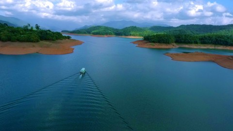
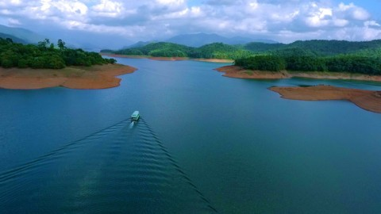

Kerala, located on the south-western tip of India, enjoys unique geographical features that have made it one of the most sought-after tourist destinations in Asia. Fondly referred to as ‘God’s Own Country’, Kerala was selected by the National Geographic Traveller as one of the 50 destinations of a lifetime and one of the thirteen paradises in the world. An equable climate, serene beaches, tranquil stretches of backwaters, lush hill stations and exotic wildlife are the major attractions of this land. A unique advantage of Kerala is that most of the destinations here are only a two - four hour drive from the other. Classical art forms, colourful festivals, exotic cuisine are some of the cultural marvels that await travellers. Ayurveda, the ancient Indian system of medicine and Panchakarma, the rejuvenation therapy in Ayurveda have also helped Kerala to gain a pan-global reputation as a worth-visit destination. Season never ends in Kerala, thanks to the year-long moderate climate and numerous festivals and events.
Eravikulam National Park is one the most frequented tourist attractions in Kerala because of Neelakurinji, which bloom once in 12 years and this rare view is a fascinating experience. Also see the Nigiri Thar, an endangered mountain goat while going on a trek to the peak of the hill. Tickets are for Rs 55 per adult and the park is closed in February and March. If you’re wondering what to do in Kerala besides meandering through the tea estates and trying their flavours in a cup, exploring Eravikulam National Park is the perfect solution and one of the must-do things in Kerala for you!
This little haven is a marvelous place to visit while in Kerala. Load up some locally cultivated tea in Munnar, 3 hours from Kochi. Visit the Kannan Devan Plantation Museum to witness tea-processing and taste different teas, one of the must do things in Kerala. You can also hire a jeep from Suryanelli (25 kms from Munnar) to visit the Kolukkumalai Tea Estate and a 100-year-old factory. Jeep rates vary from Rs 1200-2000. You can try various types and flavors of tea while exploring Munnar Tourist Places and carry home your favorite one from the museum’s very own shop.
Alleppey tops in the list of places to visit in Kerala. And when you’re there, don’t miss out on the experience of sailing in a houseboat that happens to be one of the best activities to do in Kerala. There are many things to do in Kerala houseboat, like looking at the lush green landscape and being served a freshly prepared meal as you travel through the tranquil backwaters, which is just as amazing as it is made out to be. The boat accommodates the whole family and includes breakfast, lunch, dinner, and snacks.

About 4 hours from Thiruvananthapuram, Alleppey offers some stunning views of the backwaters. Other than looking at the village life and the coconut trees, you will also see an array of birds. The double-deck boats give a 3-4 hour ride, one of the must do things in Kerala, without the expense of a houseboat and costs Rs 600 per hour. Love birdwatching and shikara rides? You must indulge in this fun activity at least once on your Kerala tour.
Watching the colorful Snake Boat races in Alleppey is one of the most amazing things to do in Alleppey, Kerala. Snake boat races are mostly held from July to September particularly during Onam festival, and witnessing this thrilling fest is one of the best things to see in Kerala. You can even rent a boat to look at the race from close-by and cheer for your favorite team as they all race by each other one by one. The closest station is Alleppey which is accessible from Ernakulam.
Take a tour of the spice plantations or gardens in Munnar, Thekkady or Wayanad. Taste some authentic black pepper, cardamom, cinnamon, and the exotic vanilla and explore the farms on a nature walk. It is one of the top activities to do in Kerala. Most hotels include these tours in their packages but you can visit on your own too, like Abraham’s Spice garden in Thekkady which costs only Rs 200 to enter. You can also buy spices you like at subsidized rates from the workshop located in the spice garden itself.
For one of the most fascinating activities to do in Kerala and its forests, Thekkady should be on the topmost list of places you are visiting in Kerala. About 190 km from Kochi, Thekkady is famous for its diverse forest cover, fauna, mammals and aquatic life. The Periyar jungle ride covers the views of the lovely Idukki town, Mullaperiyar Dam, the lush green vegetable farms, the sprawling vineyards and if you are lucky the endangered lion-tailed macaque. You can also combine this with an overnight camp in a tent or a treehouse, one of the top activities to do in Kerala.
Next on our list of things to do in Kerala is staying in a Tree House. Get closer to nature and experience the fun of staying in a Treehouse at Wayanad, Munnar, Athirapally or Thekkady. You can indulge in activities like rappelling, rock climbing, nature walks and mountain biking.
Kodanad Elephant Sanctuary is one of the major tourist attractions in Kerala. 42 kms from Kochi, visit there for some exciting activities like elephant bath, elephant safari and elephant feeding and watching baby elephants too.
Have an authentic rural experience at Kumbalangi Integrated Tourism Village. Exploring the local paddy cultivation, canoeing in mangrove forests, fishing, crab farming are amongst the many activities in Kerala. Many homestays are available in the village which can be booked by visitors. The village is 14 km from Ernakulam Railway Station. It will thus be super easy for you to get there by a car on hire or a bus.
From all the places to visit on your trip to Kerala, exploring the Veli Lake and dining in the floating restaurant at the lake is an incredible experience. Paddleboat in the lake and check out the floating bridge that links the tourist village with the beach. Veli Tourist Village is located at a distance of 8 km from Thiruvananthapuram. You can simply hire a car, take a taxi, or ride in the bus to get to this serene little hamlet.
Drink your cuppa joe where it gets made. Stay at a coffee plantation resort or homestay and it would include all the activities in Kerala like trekking, night safaris, campfire and plantation walks
Fort Kochi is counted among the top Kerala attractions. With the influence of Arabs, British, Dutch, Chinese, and Portuguese, Fort Kochi has a lot of eclectic architecture to gawk at. Explore the place on foot or on a bicycle including the Jewish synagogue, Indo Portuguese museum, Chinese fishing nets, Santa Cruz Basilica, and Fort Kochi Beach that is one of the best activities in Kerala. You’ll be enthralled with your visit to this fort that is located right on the beach, a queer phenomenon not many beaches and forts in the world offer. It is one of the best things to see in Kerala.

The national festival of Kerala celebrated for the coming of the King Mahabali.
Athachamayam is the beginning of the Onam festival which is celebrated for ten-days in Kerala.
A sigh inducing water carnival where lurid illuminated replicas of the temple float over the Muvattupuzha River in small vibrantly festooned canoes is the Attuvela Mahotsavam.

The Adoor Gajamela forms the cornerstone of the ten-day annual celebration held at the Parthasarathy Temple in Adoor.

Aranmula boat race is the oldest boat race still exists in Kerala without losing its heritage value.

The festival is celebrated at the Sri Visalakshi Sametha Sri Viswanatha Swamy temple dedicated towards Lord Shiva and Goddess Lakshmi.
MakaraVilakku at Sabarimala Temple is a seven-day festival which begins on Makara Sankranthi day.

Patayani is a week-long ritual dance, held in Kaali temples on the banks of the Pamba river during the Malayalam months of Meenam and Medam (March - April).


 
